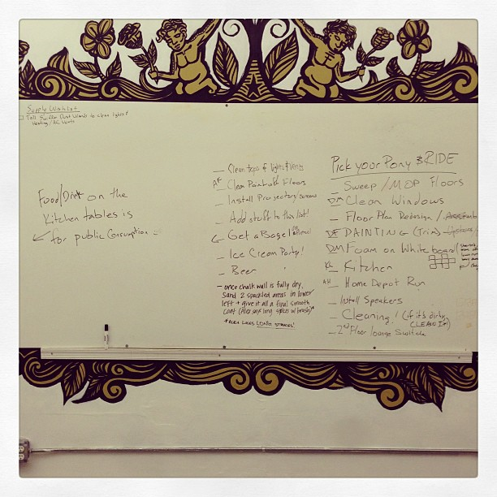
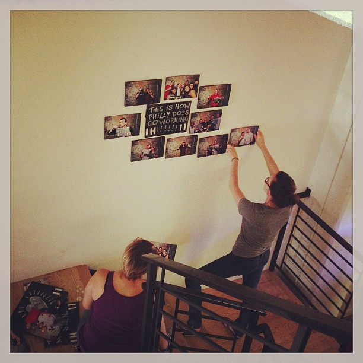
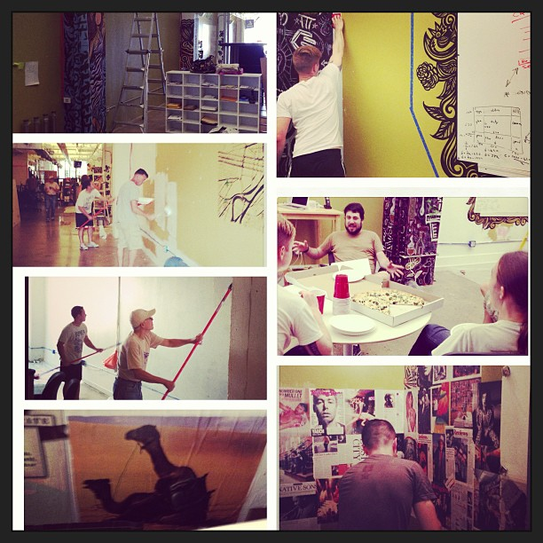
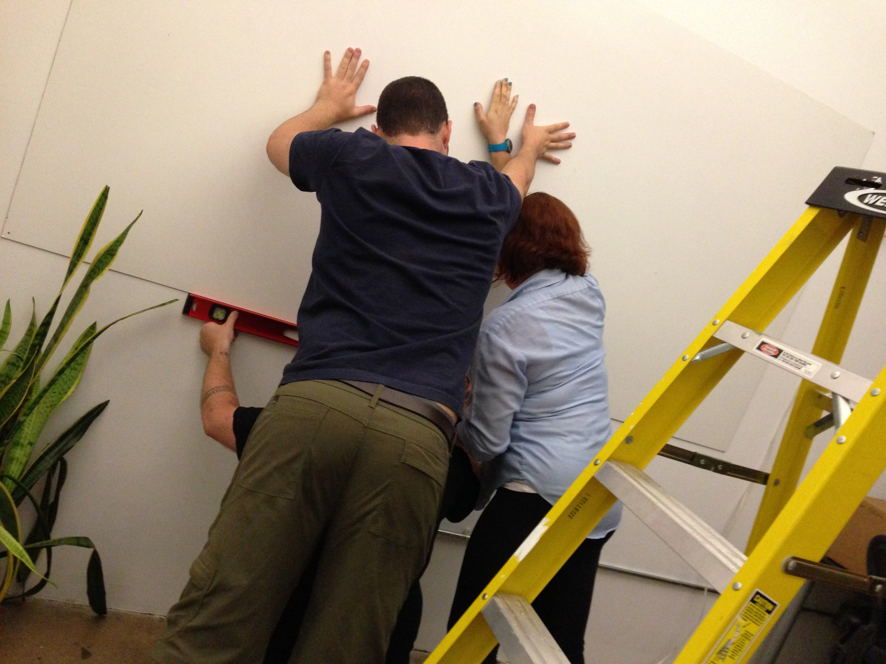

Indy Hall is a place where things are always in flow, changing and moving. For everyone in this community, that’s a very good thing.
But even when we KNOW that change and flow are good, it’s easy for us to get complacent; for cobwebs to start to grow in untouched corners, for us to get so familiar with the 3-5 people we work closest to that we miss out on opportunities to bump into new members. Many of the bigger ideas for improving Indy Hall stack up over the year, sometimes edging into being forgotten.
These are some of the reasons why we do an annual Spring Reboot. Try thinking about the Reboot like “spring cleaning with a purpose”.
There are two primary goals:
- To make Indy Hall nicer for ourselves, for each other, and for guests
- To give you an opportunity to try sitting in new, different areas of Indy Hall with new, different people
This year, our Spring Reboot will be happening from Friday May 16th to Sunday May 18th. For these three days (including all day Friday) Indy Hall will be “closed” for normal operations.
During that weekend, we’ll be tidying and organizing, building and fixing. The more members who participate in the Reboot Weekend, the better Indy Hall will be when we’re done!
Preparing for the Reboot
Full Time Members will pack their desks into boxes. In the week prior to the Reboot, all full time members will be asked to pack up their things (don’t worry we provide boxes!) so they can be stored safely for the weekend.
If you know you’ll be away during that week/weekend, please let us know ahead of time so we can coordinate with you!
All members will pack or purge the things they’ve been storing at Indy Hall. Creature comforts are totally important to Indy Hall feeling cozy for you, and can be packed up during the reboot. If you are NOT a full time member, but you have belongings that you’ve been storing at Indy Hall, the next few weeks are a good time to clear out what you’re not using on a regular basis.
General rule of thumb: if your stuff spends more time at Indy Hall than you do, it probably doesn’t belong here. 
Collect project & improvement ideas ahead of time. In the next couple of weeks, we’ll be gathering a list of things to go onto a big public “todo list” for the reboot. If you have ideas, send them in ([email protected])!
Some example projects from last years’ reboot included:
- Repainting walls
- Cleaning windows
- Moving/rearranging/hanging art
- Installing the photo collage on the staircase
- The cool magazine & comic book walls in the bathrooms
- Installing the chalkboard wall on the 2nd floor by the stairs (the birthday/announcement wall)
- A few new desk layouts
- Moving the upstairs lounge near the kitchen
- Replace/Move/Remove whiteboards
- …and a whole lot more
By request (thanks Lansie!), we’ll keep a live-updated version of our todo-list online during the reboot so you can follow along and see what still needs hands on deck.
Check out a few photos from last year’s reboot down at the bottom of this post.
Finding a New Seat After Reboot Weekend
After a whole weekend of cleaning, purging, and projects, we’ll put Indy Hall back together for normal operations on Monday. But there’s one important thing that will be different: you’ll have found a new place to sit, with new people!
For full time members especially, reboot might be the first time all year that you changed the place where you sit when you work from Indy Hall. Moving your desk once in a while can seem like a pain in the ass, but it’s worth it.
Last year, we had some complaints about people coming in early to “claim” their spot, while other people felt like they didn’t get a fair chance. Within a few weeks after the reboot, though, everyone was happily settled into their new areas.
We only have a handful of guidelines about how desks are configured at Indy Hall, and they’re all specific design choices that we’ve learned help everyone get the most out of however much time they spend here.
In the next week or so, we’ll be posting a bit more about how that works and what you can do to make the reshuffle go as smoothly as possible.
My #1 piece of advice is to avoid thinking about this as “where do I want to sit?” because wherever you end up, you’ll still be at Indy Hall 🙂
If you have ideas, questions, concerns, or anything at all you want to talk about, please don’t hesitate to email us: [email protected].
Thanks in advance for all of your helping hands and contributions. I’m really looking forward to this Reboot, and hope you can join in.
Photooooooos



